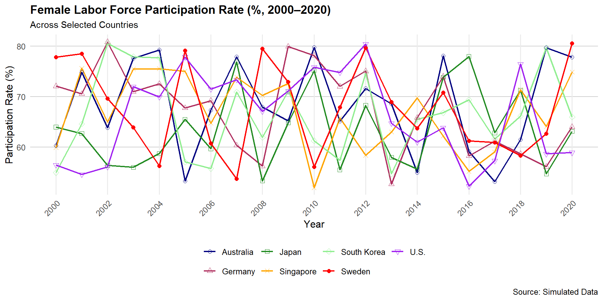

if (!require(pacman)) install.packages("pacman")
# Load required packages
library(ggplot2)
library(dplyr)
# Simulated example data (replace with actual dataset if available)
set.seed(123) # For reproducibility
data <- data.frame(
year = rep(2000:2020, 7),
flfp = runif(21 * 7, min = 52, max = 81),
country = rep(c("Australia", "Germany", "Japan", "Singapore",
"South Korea", "Sweden", "U.S."), each = 21)
)
# Define custom colors for countries
country_colors <- c(
"Australia" = "navy",
"Germany" = "maroon",
"Japan" = "forestgreen",
"Singapore" = "orange",
"South Korea" = "lightgreen",
"Sweden" = "red",
"U.S." = "purple" # 'lavender' is hard to see; replaced with darker purple
)
# Define custom shapes for countries
country_shapes <- c(
"Australia" = 1,
"Germany" = 2,
"Japan" = 0,
"Singapore" = 4,
"South Korea" = 5,
"Sweden" = 16,
"U.S." = 6
)
# Create the plot
ggplot(data, aes(x = year, y = flfp, color = country, shape = country)) +
geom_line(linewidth = 0.8) +
geom_point(size = 2) +
scale_color_manual(values = country_colors) +
scale_shape_manual(values = country_shapes) +
scale_x_continuous(breaks = seq(2000, 2020, 2)) +
labs(
title = "Female Labor Force Participation Rate (%, 2000–2020)",
subtitle = "Across Selected Countries",
x = "Year",
y = "Participation Rate (%)",
caption = "Source: Simulated Data"
) +
theme_minimal(base_size = 12) +
theme(
axis.text.x = element_text(angle = 45, hjust = 1),
panel.grid.minor = element_blank(),
panel.grid.major.y = element_line(color = "gray80", linetype = "solid", linewidth = 0.4),
legend.position = "bottom",
legend.box = "horizontal",
legend.title = element_blank(),
plot.title = element_text(face = "bold", size = 14),
plot.subtitle = element_text(size = 11)
)Data science project
Alireza Sadeghi
Introduction
-Objective: Reproduce the graph and table using Rstudio. These figures show “Labor force participation rate%female” and the table shows “the annual household labor income”
-Tools: These figures have been replicated in Rstudio by packages called ggplot2(Wickham et al. 2007) , dplyr, (Wickham et al. 2014), modelsummary, Arel-Bundock (2022), kableExtra,(Zhu 2017).
-Result: To understand the female’s labor force participation and also the annual household labor income
Introduction
-We used ggplot2 ,dplyr for replicating the graph and we used modelsummary, dplyr to replicate the table. -This paper (Choi, Kim, and Lim 2025)asks this question that do people with stronger strategic thinking abilities earn more or perform better economically? And does this effect go beyond individuals to benefit households?
-This has been study on 3000 people in South Korea and Singapore.
Challenges
_ Old version of Rstudio
_ Pushing to github
_ Making a reference list
Original graph

Replicated graph
Replication code of graph
Replicated to a Table
| Country | 2000 | 2001 | 2002 | 2003 | 2004 | 2005 | 2006 | 2007 | 2008 | 2009 | 2010 | 2011 | 2012 | 2013 | 2014 | 2015 | 2016 | 2017 | 2018 | 2019 | 2020 |
|---|---|---|---|---|---|---|---|---|---|---|---|---|---|---|---|---|---|---|---|---|---|
| Australia | 60.3 | 74.9 | 63.9 | 77.6 | 79.3 | 53.3 | 67.3 | 77.9 | 68.0 | 65.2 | 79.7 | 65.1 | 71.6 | 68.6 | 55.0 | 78.1 | 59.1 | 53.2 | 61.5 | 79.7 | 77.8 |
| Germany | 72.1 | 70.6 | 80.8 | 71.0 | 72.5 | 67.8 | 69.2 | 60.4 | 56.3 | 79.9 | 78.2 | 72.0 | 75.1 | 52.7 | 65.9 | 74.0 | 58.3 | 61.2 | 58.7 | 56.1 | 64.0 |
| Japan | 64.0 | 62.7 | 56.4 | 56.0 | 58.8 | 65.5 | 59.7 | 76.9 | 53.3 | 64.8 | 75.2 | 55.5 | 68.3 | 58.0 | 55.7 | 73.8 | 78.0 | 62.9 | 71.3 | 54.8 | 63.1 |
| Singapore | 60.0 | 75.6 | 65.0 | 75.5 | 75.6 | 75.0 | 64.8 | 73.9 | 70.2 | 72.6 | 52.0 | 65.8 | 58.4 | 63.0 | 69.8 | 62.2 | 55.2 | 59.1 | 71.4 | 64.1 | 74.9 |
| South Korea | 55.0 | 64.6 | 80.6 | 77.9 | 77.7 | 57.1 | 55.8 | 70.9 | 62.0 | 71.0 | 61.3 | 57.4 | 74.7 | 54.7 | 65.5 | 66.8 | 69.4 | 61.7 | 66.2 | 79.7 | 66.0 |
| Sweden | 77.8 | 78.5 | 69.7 | 63.9 | 56.3 | 79.1 | 60.7 | 53.8 | 79.5 | 72.9 | 56.1 | 67.9 | 79.7 | 69.0 | 63.7 | 70.8 | 61.3 | 60.9 | 58.4 | 62.7 | 80.5 |
| U.S. | 56.5 | 54.6 | 56.1 | 72.0 | 70.0 | 77.9 | 71.5 | 73.4 | 67.1 | 71.1 | 75.8 | 74.8 | 80.4 | 64.7 | 61.0 | 63.9 | 52.3 | 57.3 | 76.4 | 58.7 | 58.9 |
Replicated Code
library(dplyr)
library(tidyr)
library(knitr)
library(kableExtra)
# Sample data
set.seed(123)
data <- data.frame(
year = rep(2000:2020, 7),
flfp = runif(21 * 7, min = 52, max = 81),
country = rep(c("Australia", "Germany", "Japan", "Singapore",
"South Korea", "Sweden", "U.S."), each = 21)
)
# Pivot to wide format
flfp_wide <- data %>%
pivot_wider(names_from = year, values_from = flfp)
# Create enhanced table
flfp_wide %>%
kable(
format = "html",
digits = 1,
caption = "📊 Female Labor Force Participation Rate (%) by Country and Year",
col.names = c("Country", as.character(2000:2020))
) %>%
kable_styling(
bootstrap_options = c("striped", "hover", "condensed", "responsive"),
full_width = FALSE,
font_size = 14,
fixed_thead = TRUE
) %>%
row_spec(0, bold = TRUE, background = "#404040", color = "white") %>%
column_spec(1, bold = TRUE, border_right = TRUE) %>%
column_spec(2:ncol(flfp_wide), background = spec_color(
as.matrix(flfp_wide[, 2:ncol(flfp_wide)]), # <-- fix here
option = "viridis"
)) %>%
scroll_box(height = "450px")References
Arel-Bundock, Vincent. 2022. “Modelsummary: Data and Model Summaries in R.” Journal of Statistical Software 103 (1). https://doi.org/10.18637/jss.v103.i01.
Choi, Syngjoo, Seonghoon Kim, and Wooyoung Lim. 2025. “Strategic Thinking Skills: A Key to Collective Economic Success.” American Economic Journal: Microeconomics 17 (2): 214–40. https://doi.org/10.1257/mic.20220259.
Wickham, Hadley, Winston Chang, Lionel Henry, Thomas Lin Pedersen, Kohske Takahashi, Claus Wilke, Kara Woo, Hiroaki Yutani, Dewey Dunnington, and Teun van den Brand. 2007. “Ggplot2: Create Elegant Data Visualisations Using the Grammar of Graphics.” The R Foundation. https://doi.org/10.32614/cran.package.ggplot2.
Wickham, Hadley, Romain François, Lionel Henry, Kirill Müller, and Davis Vaughan. 2014. “Dplyr: A Grammar of Data Manipulation.” The R Foundation. https://doi.org/10.32614/cran.package.dplyr.
Zhu, Hao. 2017. “kableExtra: Construct Complex Table with ’Kable’ and Pipe Syntax.” The R Foundation. https://doi.org/10.32614/cran.package.kableextra.